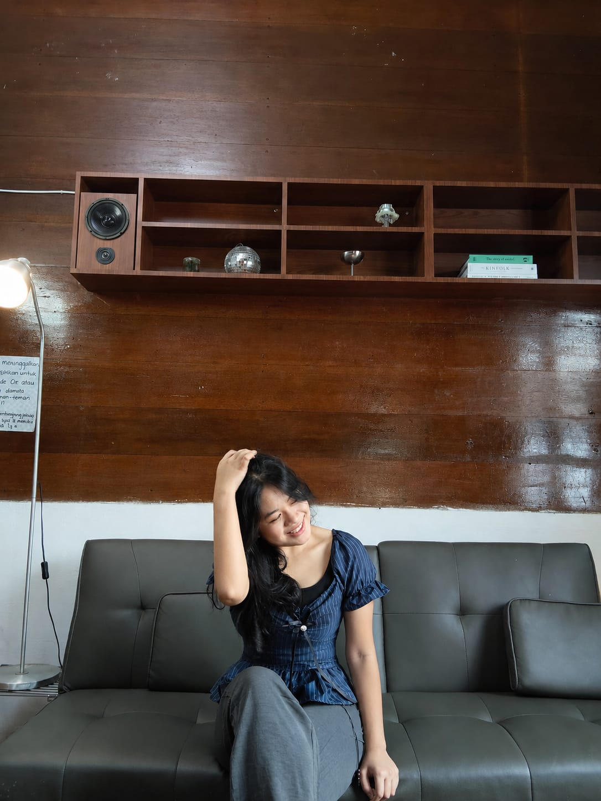

Profil Mahasiswa

Hallo, nama saya Joyce Margareth Sembiring. saya mahasiswa Universitan Advent Indonesia angkatan 25 yang terletak di Bandung. saya berada di fakultas Teknik Informatika, Jurusan Sistem Informasi.
Saya berharap setelah saya lulus dari UNAI fakultas FTI, saya bisa mendapatkan pekerjaan yang sesuai dengan jurusan saya dan yg saya minati dari sekarang, dan sesuai dengan ekspetasi saya. Saya akan terus belajar, menambah pengalaman, dan mengembangkan kemampuan saya di dunia tegnologi. saya juga ingin mendapat gaji yang besar diatas UMR hehe, doakan saya yaa!!!
Informasi Pribadi
Nama: Joyce Margareth Sembiring
NIM: 2582008
Study Program: Sistem Informasi
Email: 2582008@unai.edu
Hobi Saya
Saya memiliki beberapa hobi, seperti:
- Berenang
- Dance
- Menyanyi
- Main Sepeda
Aktivitas Lain yang Saya Nikmati
- Mendengarkan musik
- Menonton Film
- Menggambar & Membaca Komik
- Pilates
Catatan Akademik
| NO | Semester | Tahun Akademik | IPK |
|---|---|---|---|
| 1 | Semester Ganjil | Tahun 2025/2026 | 3.67 |
| 2 | Semester Genap | Tahun 2026/2027 | 3.57 |
Hubungi Saya
Jika ada pertanyaan atau ingin berdiskusi, silakan isi formulir di bawah ini yaw: